겨울이 되어서야 알게 되는 외풍, 첫 겨울에 생기는 결로, 몇 달 뒤부터 뻑뻑해지는 창문. 이런 문제는 빈 집을 두세 시간 둘러봐서는 절대 찾을 수 없습니다.
그리고 대부분 원인을 잘못 짚습니다. 롤러를 갈고, 모헤어를 두껍게 바꾸고, 실리콘을 덧바릅니다. 몇 달 지나면 원래대로 돌아옵니다. 원인이 다른 곳에 있었기 때문입니다.
이 페이지는 청개구리샤시가 실제 현장에서 원인을 찾아낸 기록입니다. 눈으로 본 것이 아니라 측정한 것만 담았습니다.
📋 이 페이지를 보시기 전에
- 사전점검 단계의 하자(흠집·들뜸·미시공)가 궁금하시면 → 사전점검 대행업체 리포트를 먼저 보십시오
- 이 페이지는 입주 후에 나타나는 하자를 다룹니다
- 창호공사의 하자담보책임기간은 3년입니다 (공동주택관리법 시행령 별표4)
창문이 무거워지고, 닫을 때 걸리고, 어느 날부터 창짝이 레일에서 빠집니다. 창틀 아래를 보면 가운데가 내려앉아 있습니다.
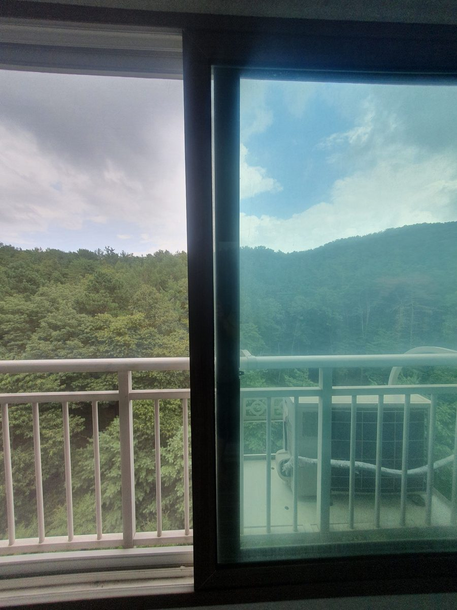
❌ 흔히 이렇게 진단합니다 — 그리고 재발합니다
- “오래돼서 그렇다” → 입주 1~2년차 세대에서도 발생합니다
- “롤러(호차)가 닳았다” → 롤러만 갈면 몇 달 뒤 똑같아집니다
- “창짝이 휘었다” → 문제는 창짝이 아니라 창틀에 있습니다
창틀을 시공할 때는 창틀과 콘크리트 벽체 사이의 빈 공간을 모르타르나 폼으로 채워야 합니다.
이것을 사춤이라고 합니다. 창틀을 아래에서 받쳐주는 받침대 역할입니다.
이게 없으면 창틀 하부는 빈 공간 위에 떠 있는 상태가 됩니다.
창짝 무게가 계속 실리면 아래로 처집니다.
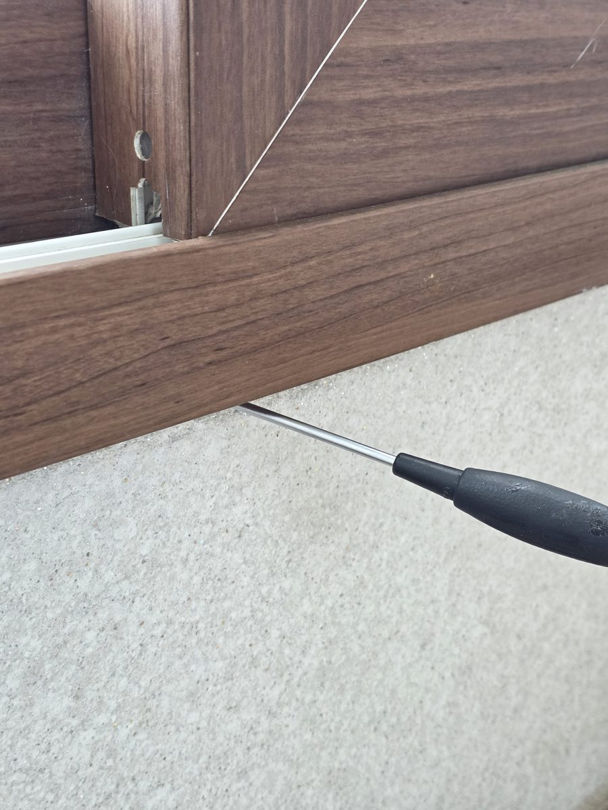
이 사진이 결정적인 증거입니다.
사춤이 제대로 채워졌다면 드라이버가 들어갈 자리가 없습니다.
쑥 들어간다는 것은 시공 당시 사춤을 하지 않았다는 뜻입니다.
노후로 생긴 현상이 아니라, 시공 단계에서 공정이 빠진 것입니다.
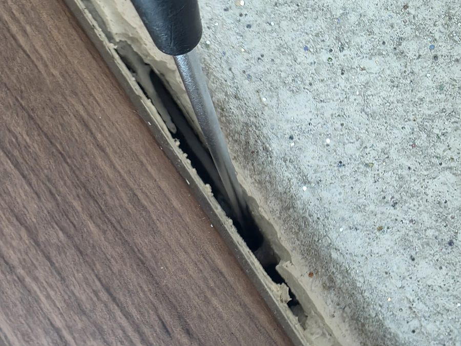
창짝이 창틀에 걸쳐지는 깊이를 걸림 치수라고 합니다.
이 깊이가 부족하면 창짝이 조금만 들려도 레일에서 빠집니다.
창틀이 처지면서 걸림 치수가 더 줄었고, 결국 창짝이 빠지는 탈창까지 진행됐습니다.
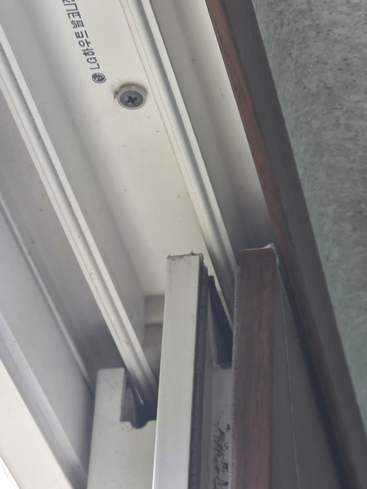
🔍 이 현장의 원인은 두 가지가 겹친 것이었습니다
- 시공 단계 — 창틀 하부 사춤 누락
- 제작 단계 — 걸림 치수 부족
- 롤러를 교체해서 해결될 문제가 아니었습니다
일반적인 방법으로는 창틀 주변을 철거해야 합니다. 타일, 마루, 걸레받이까지 손을 대게 됩니다.
공사 규모와 비용이 크게 올라갑니다.
청개구리샤시는 마감재를 뜯지 않고 창틀 수평을 회복시키는 자체 공법을 사용합니다.
창틀을 들어 수평을 잡고 하부를 보강해 고정한 뒤, 걸림 치수를 확보하고 창짝을 재설치합니다.
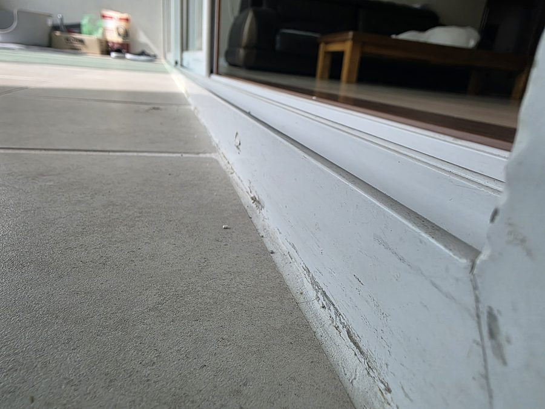
⚖ 알아두실 것
- 창틀 하부 사춤 미충전은 기능상 하자로 인정된 사례가 있습니다 (국토교통부 하자판정기준)
- 창호공사 하자담보책임기간은 3년입니다
- 담보책임기간은 하자가 ‘발생’해야 하는 기간입니다. 그 안에 생겼다면 이후에 청구해도 됩니다 (대법원 2023다298892)
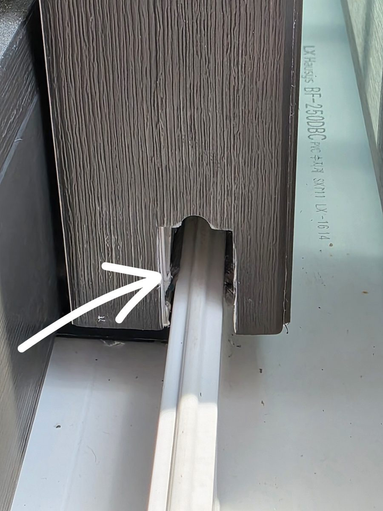
창문 두 짝이 가운데서 겹치는 부분을 여밈대라고 합니다.
이 여밈대 프레임 안쪽은 비어 있습니다. 알루미늄이나 PVC 프레임은 속이 빈 관 형태로 만들어지기 때문입니다.
이 빈 공간을 중공부라고 합니다.
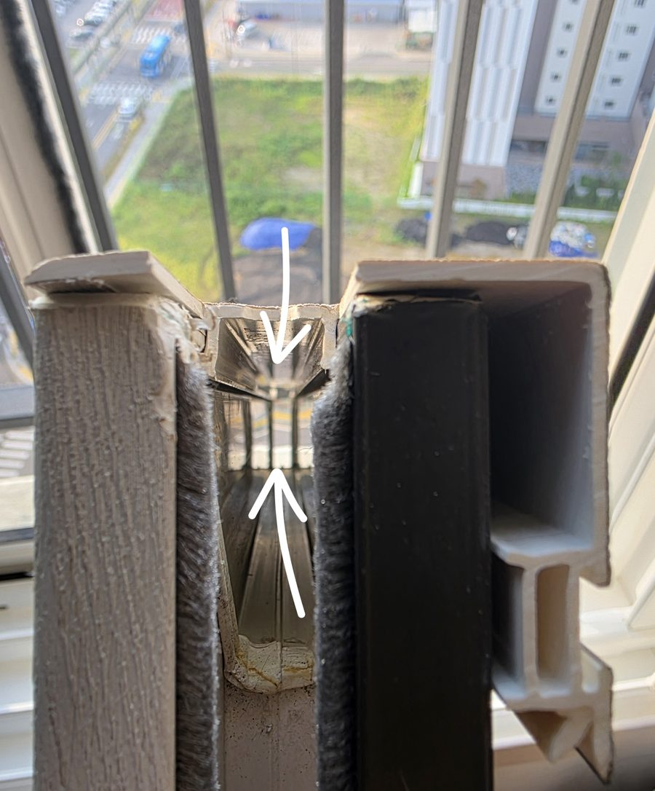
🌬 문제는 이 빈 공간의 위아래가 뚫려 있다는 점입니다
- 아래쪽에서 찬 공기가 들어오면 빈 관을 타고 위로 올라가 실내로 나옵니다
- 굴뚝과 같은 원리입니다 (연돌효과)
- 즉 여밈대 중공부는 창짝 안에 숨어 있는 바람 통로입니다
- 겉에서 보면 아무것도 보이지 않습니다
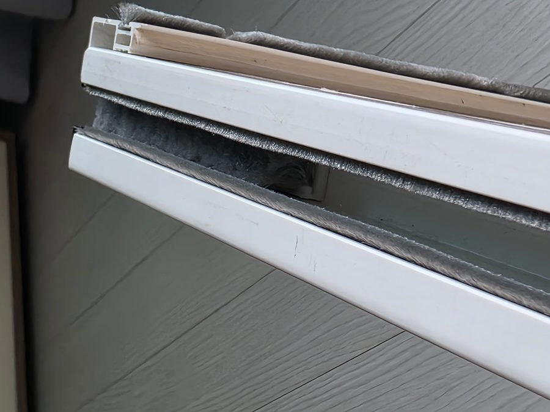
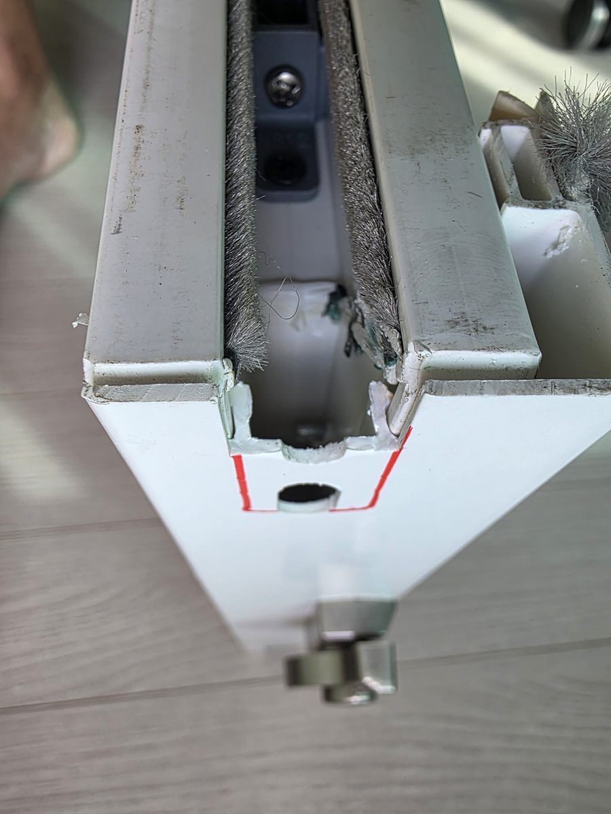
창짝 둘레에는 모헤어(솔처럼 생긴 털)가 붙어 틈을 막아줍니다. 그런데 모헤어는 소모품입니다. 시간이 지나면 눌리고 벌어지며, 한 번 눌리면 원래대로 돌아오지 않습니다. 처음부터 길이가 짧게 들어간 경우도 많습니다.
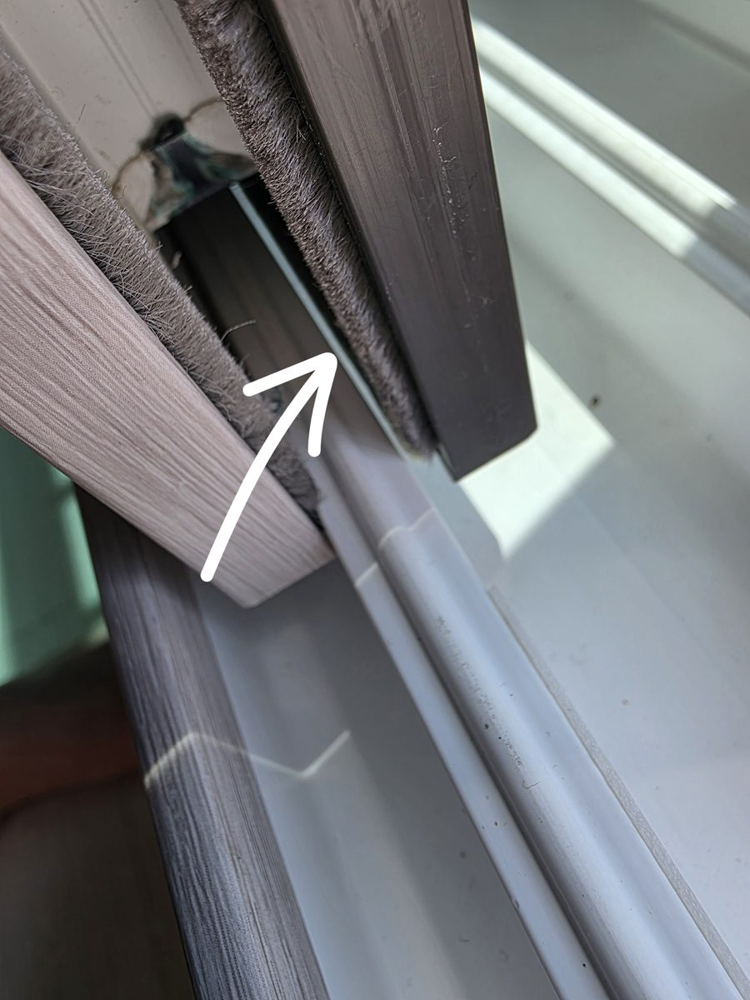
⚠ 모헤어만 두껍게 바꿨을 때 생기는 일
- 당장은 틈이 줄어듭니다
- 그런데 창문이 뻑뻑해집니다. 고객은 결국 다시 헐겁게 해달라고 하십니다
- 몇 달 지나면 눌려서 원래대로 돌아옵니다
- 무엇보다 여밈대 중공부는 그대로 뚫려 있습니다
💡 핵심 : 남아 있는 가장 큰 틈이 전체를 결정합니다
- 공기가 새는 길이 여러 개일 때, 가장 큰 틈이 전체 성능의 한계가 됩니다
- 세 곳 중 두 곳을 완벽히 막아도, 한 곳이 뚫려 있으면 그리로 다 들어옵니다
- 그래서 외풍 차단은 창짝 네 변 전체 + 중공부 위아래를 함께 봐야 합니다
- 한 군데만 손대는 시공이 효과가 잘 안 나오는 이유입니다
✅ 청개구리샤시의 접근
- 여밈대 중공부 위아래를 봉인해 굴뚝 경로를 끊습니다
- 창짝 네 변의 모헤어를 정상 규격으로 회복시킵니다
- 개폐감을 확인합니다 — 뻑뻑해지면 실패입니다
준공 24년 아파트. 얼마 전 외풍 차단 업체가 수리를 끝내고 간 현장입니다.
수리비를 지불했습니다. 그런데 겨울이면 여전히 찬바람이 들어오고,
이제는 창문까지 뻑뻑해서 끝까지 닫히지도 않습니다.
청개구리샤시가 시공한 현장이 아닙니다. 진단만 의뢰받아 확인한 곳입니다.
결함 8곳이 나왔습니다.
😭 이 집이 수리비를 내고 얻은 것
- 외풍 — 그대로입니다
- 창문 — 수리 전보다 뻑뻑해졌습니다. 끝까지 닫히지 않습니다
- 벌레 — 하부 레일이 뚫려 여름에 새로 생긴 문제입니다
- 비용 — 이미 지불했고, 제대로 고치려면 다시 들어갑니다
이건 수리가 아닙니다.
틈을 ‘가린 것’입니다.
🛈 이 섹션을 쓰는 이유
- 특정 업체를 지목하려는 글이 아닙니다. 업체명·위치·제품 브랜드를 밝히지 않습니다
- 사진에 보이던 타사 제품 라벨은 모두 가렸습니다
- 다만 이런 시공이 업계에 흔하다는 것은 분명히 말씀드립니다
- 목적은 하나입니다 — 고객이 돈 내고 더 나빠지는 일을 막는 것
미서기창은 창짝이 겹쳐 미끄러지는 구조입니다.
완벽하게 틀어막으면 창이 열리지 않고, 잘 열리게 하면 틈이 생깁니다.
그래서 제대로 된 수리의 목표는 ‘완전 밀폐’가 아니라
개폐가 되는 선에서 틈을 최대한 줄이는 균형입니다.
이 균형을 이해하지 못하면 어떤 일이 벌어지는지, 이 현장이 그대로 보여줍니다.
⚠ 이 현장에서 확인된 3가지 편법 — 전부 ‘일하기 쉬운 쪽’으로 갔습니다
- ① 쉬운 곳만 손댔습니다 — 교체하기 쉬운 창짝 가운데 모헤어만 두꺼운 것으로 바꿈. 손이 많이 가는 모서리와 상하부는 건드리지도 않았습니다
- ② 어려운 곳은 덮어버렸습니다 — 상·하부는 모헤어 대신 기존 레일 위에 PVC 커버를 덧씌움. 고친 게 아니라 가린 것입니다
- ③ 하부 기밀은 아예 포기했습니다 — 창이 안 움직이니까 풍지판을 안 맞는 것으로 끼우거나 그냥 빼버렸습니다
어려운 공정을 뺀 만큼 시간은 줄었고, 그 대가는 전부 고객이 치렀습니다. — 결함 8곳을 관통하는 공통점입니다
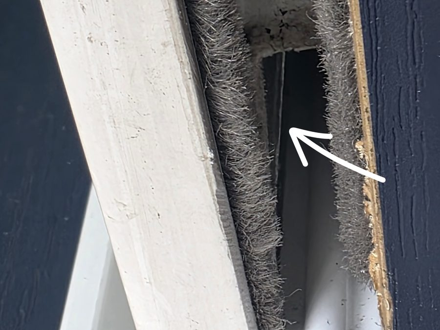
두께만 키웠을 뿐, 양쪽 모가 정확히 맞물리게 맞추지 않았습니다.
창은 뻑뻑해지고 틈은 그대로 남았습니다.
개폐도 잃고 밀폐도 못 얻은, 가능한 결과 중 가장 나쁜 것입니다.
그런데 고객에게는 “모헤어를 더 두꺼운 걸로 교체했다”고 설명됩니다.
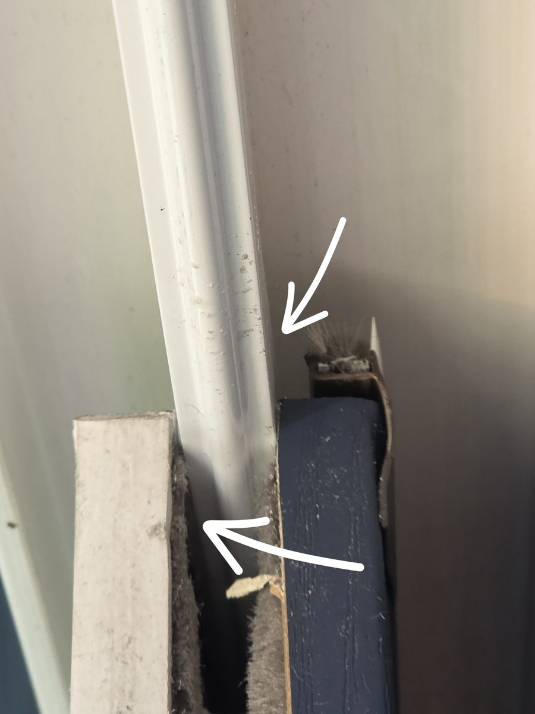
창의 네 모서리는 바람이 가장 많이 새는 곳입니다. 그런데 여기는 교체가 까다롭다는 이유로 손도 대지 않았습니다. 가장 중요한 곳을 비워두고 가장 쉬운 곳만 만진 것입니다.
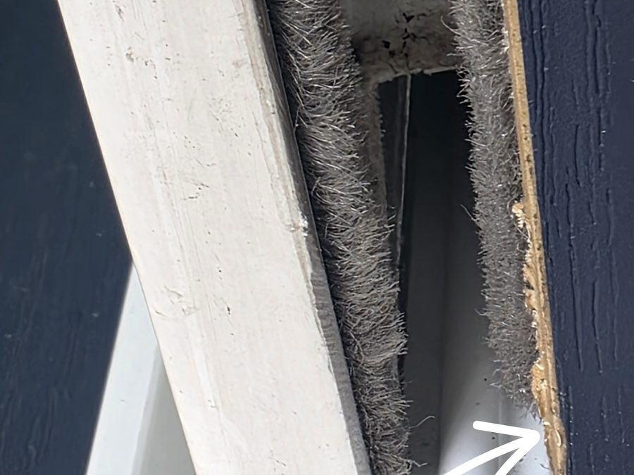
상부와 하부는 모헤어 교체에 손이 많이 갑니다. 그래서 이 시공은 모헤어를 제대로 넣는 대신, 다음에 보실 PVC 레일커버로 덮는 쪽을 택했습니다.
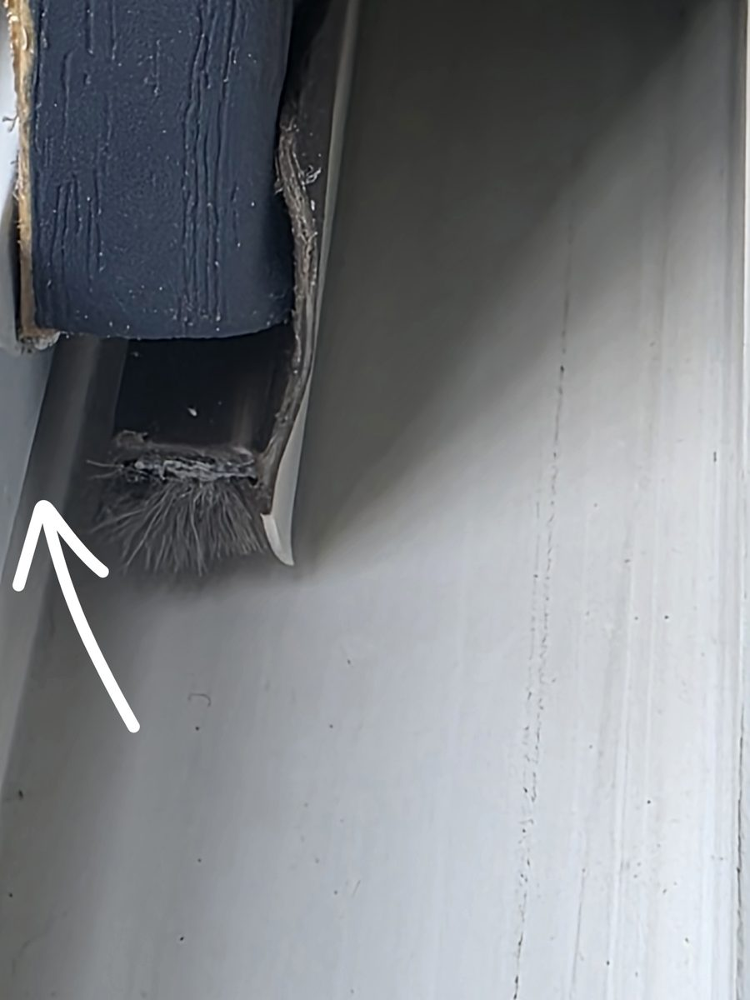
모헤어로 압착하는 대신 기존 레일 위에 PVC 커버를 덧씌웠습니다.
그런데 덧대는 방식은 창짝과 딱 맞물리지 않습니다.
겉보기에는 뭔가 새로 채워 넣은 것처럼 보입니다.
시공이 끝난 창을 보면 하얗고 깔끔합니다. 고객은 작업이 잘 된 줄 압니다.
그런데 기밀은 전혀 잡히지 않았습니다.
보이는 것과 막히는 것은 다릅니다.
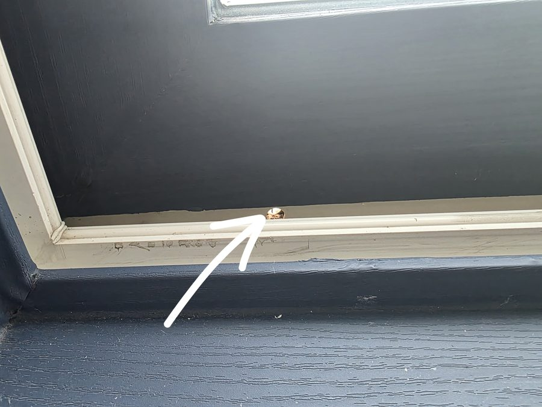
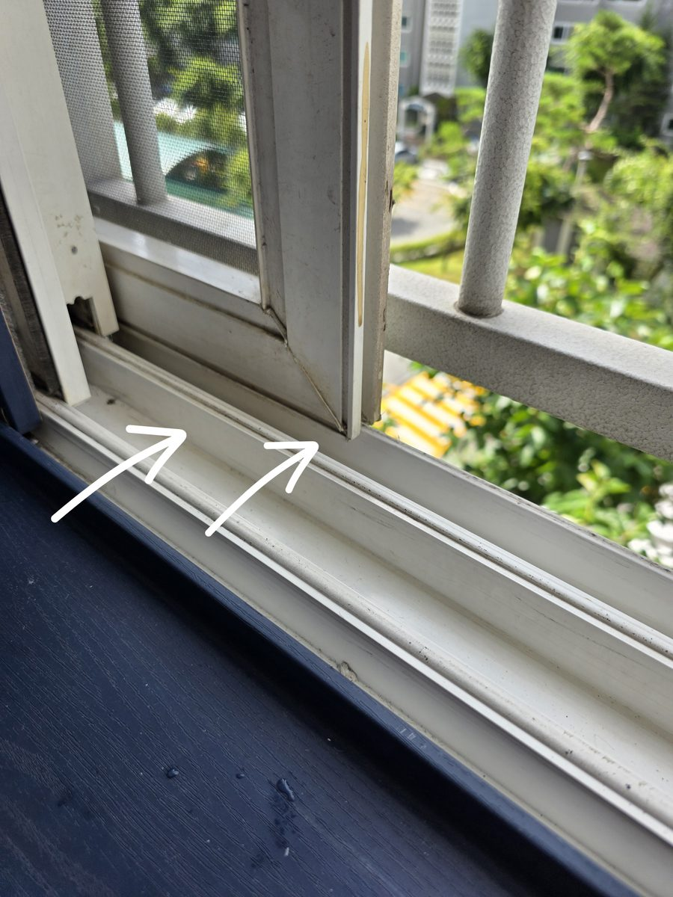
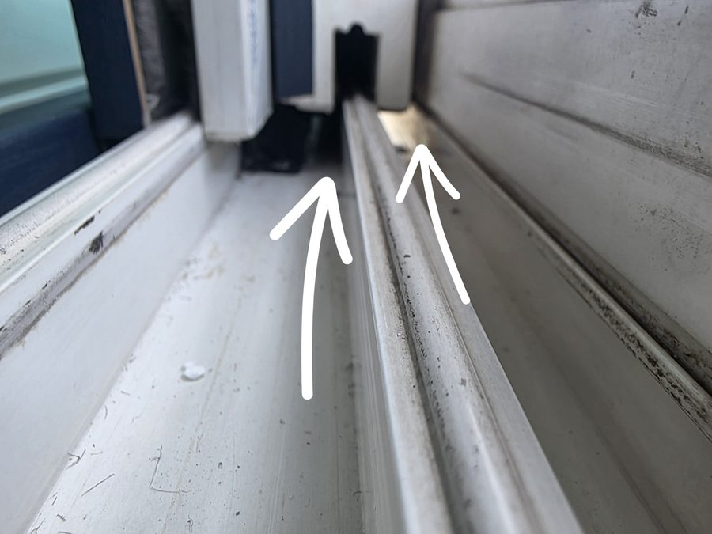
풍지판은 창짝 아래와 레일 사이 틈을 막아 바람은 물론 벌레까지 걸러주는 부품입니다.
규격이 안 맞으니 틈이 그대로 남고, 방충망 틀 하부 레일에는 아예 시공되지 않았습니다.
이렇게 뚫린 하부 틈은 겨울엔 외풍이, 여름엔 벌레가 드나드는 주요 통로가 됩니다.
집 안으로 벌레가 들어오는 가장 흔한 경로 중 하나가 바로 이 하부 레일입니다.
개폐를 조금 편하게 만들자고 겨울 외풍과 여름 벌레를 함께 불러들인 셈입니다.
외풍을 막아달라고 부른 수리인데, 없던 문제가 하나 더 생겼습니다.
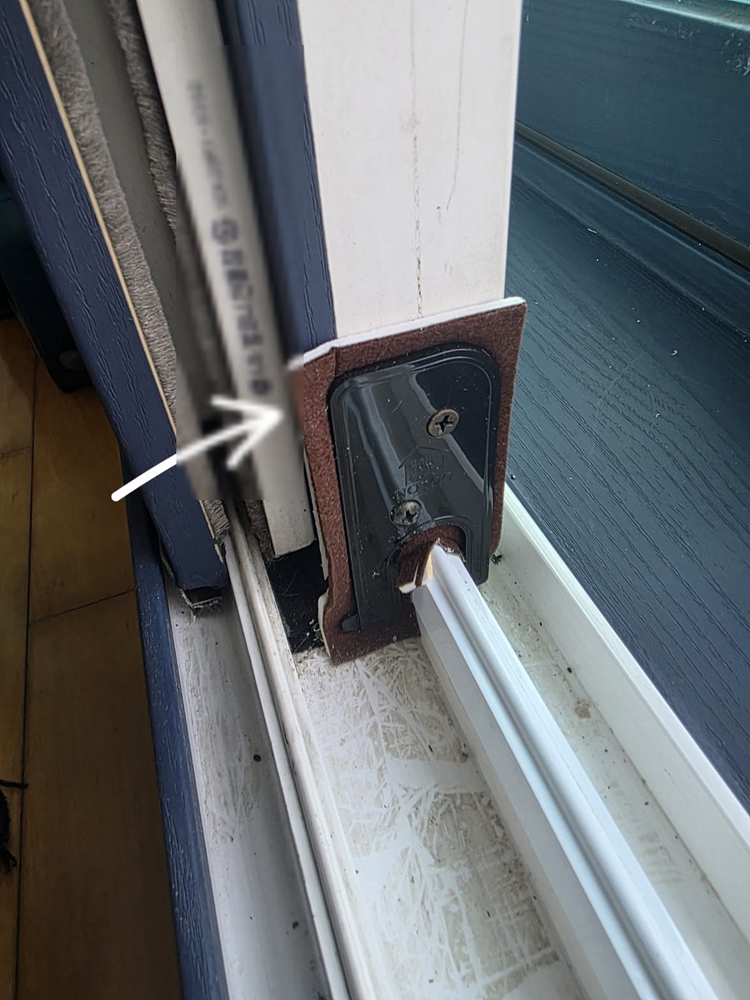
🚨 틈을 줄이려고 덧댄 커버가, 창을 못 닫게 만들었습니다
- 레일 위에 커버를 덧대면 레일 높이가 올라갑니다
- 높아진 레일 위에 방풍캡을 다니 캡이 튀어나와 창짝과 부딪힙니다
- 결국 창이 끝까지 닫히지 않습니다
- 하나를 위해 하나를 희생한 결과입니다
여덟 곳을 관통하는 원인은 하나입니다.
슬라이딩 창호는 완전 밀폐가 불가능하고, 정답은 개폐를 유지하면서 틈을 최소화하는 균형입니다.
이 시공은 그 균형을 부위마다 정반대로 무너뜨렸습니다.
쉬운 가운데는 과하게 막아 뻑뻑하게 만들고, 어려운 상하부와 모서리는 방치하거나 커버로 덮고,
하부는 기밀과 풍지판을 아예 포기했습니다.
결과는 여전한 외풍, 끝까지 닫히지 않는 창문, 그리고 새로 생긴 벌레 통로입니다.
고치기 전보다 나아진 것이 하나도 없습니다.
기술이 부족해서가 아니라, 어려운 공정을 뺀 결과입니다.
🚫 이런 시공이 반복되는 이유
- 외풍은 수리 직후에 검증할 방법이 없습니다. 겨울이 와야 압니다
- 그래서 겉보기에 뭔가 채워 넣은 것처럼만 보이면 작업이 끝납니다
- 고객이 문제를 알아차릴 때쯤엔 이미 몇 달이 지나 있습니다
- 이것이 저희가 수리 전후를 반드시 측정해 숫자로 남기는 이유입니다 (→ 4. 검사 장비)
✅ 그래서 수리를 맡기실 때 이것만 확인하십시오
- 네 변을 다 보는가 — 가운데만 손대고 모서리·상하부를 빼면 효과가 없습니다
- 덧대는가, 맞추는가 — 기존 레일 위에 덧씌우는 방식은 밀착이 안 됩니다
- 배수와 기밀을 함께 보는가 — 물길은 열고 바람은 막아야 합니다
- 수리 후 창이 부드럽게 닫히는가 — 뻑뻑해졌다면 그 수리는 실패입니다
- 풍지판 규격이 맞는가 — 안 맞는 것을 끼우면 틈은 그대로입니다
- 수리 전후를 측정해 주는가 — 숫자가 없으면 잘됐는지 잘못됐는지 알 방법이 없습니다
외풍 수리를 받았는데 겨울에 여전히 춥거나, 창이 전보다 뻑뻑해졌다면
재시공을 알아보기 전에 진단부터 받아보십시오.
어디가 잘못됐는지 모른 채 다시 맡기면, 같은 방식으로 한 번 더 덮일 수 있습니다.
저희는 열화상과 초음파 음향카메라로 지금 어디가 뚫려 있는지 확인해 드립니다.
수리 여부와 관계없이 진단만 받으셔도 됩니다.
저희는 열화상카메라를 씁니다. 그런데 이 말씀부터 드려야 할 것 같습니다.
사전점검에서는 열화상카메라가 거의 필요 없습니다.
📊 실제 사전점검 데이터 106,376건이 말해주는 것
- 가장 많은 하자는 흠집 · 들뜸 · 미시공 · 마감불량 — 전체의 40~50%
- 이 항목들은 전문 장비 없이 육안으로 확인됩니다
- 열화상카메라가 있어야 찾는 하자(결로·누수)는 전체의 1% 미만
- 즉 사전점검에서 중요한 것은 비싼 장비가 아니라 꼼꼼히 보는 것입니다
🚨 특히 여름 열화상은 신뢰하지 마십시오
- 열화상은 표면 온도를 색으로 보여주는 장비입니다. 안팎에 온도 차가 없으면 아무것도 안 나옵니다
- 여름철에 열화상으로 단열을 판정하는 것은 물리적으로 불가능합니다
- 외벽의 온도 차는 단열재 위치에 따른 자연스러운 현상인 경우가 많습니다. 이를 하자로 읽으면 오독입니다
- 장비를 갖고 있는 것과 해석할 줄 아는 것은 다릅니다
| 구분 | 사전점검 (입주 전) | 입주 후 진단 |
|---|---|---|
| 대상 | 빈 집, 두세 시간 | 살면서 생긴 문제 |
| 주요 하자 | 흠집 · 들뜸 · 미시공 | 외풍 · 결로 · 소음 |
| 눈으로 보이나 | 보입니다 | 전혀 안 보입니다 |
| 열화상 필요성 | 거의 불필요 (1% 미만) | 결정적 |
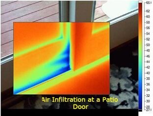
창 바깥에 초음파 발생기를 둡니다. 사람 귀에는 들리지 않는 높은 소리입니다.
실내에서 초음파 음향 카메라로 창을 보면, 공기가 통하는 틈으로 그 초음파가 새어 들어옵니다.
카메라는 소리가 들어오는 지점을 화면에 색점으로 표시합니다.
틈이 있는 곳에만 점이 찍힙니다.
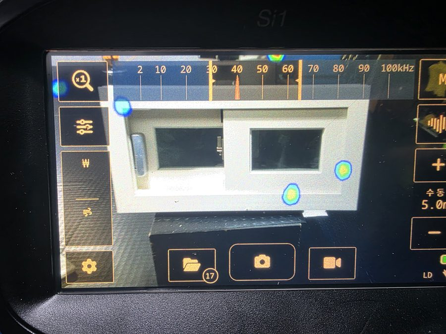
🎯 왜 중요한가
- 외풍 수리에서 가장 흔한 실패가 엉뚱한 곳을 막는 것입니다
- 아래가 뚫렸는데 위를 막으면 아무 변화가 없습니다
- 초음파 음향 카메라는 어디를 막아야 하는지를 추측이 아니라 화면으로 알려줍니다
- 실제 검사에서는 상부 레일 · 여밈대 가운데 · 하부 코너가 자주 나옵니다. 세대마다 다릅니다
✅ 저희가 지키는 원칙
- 겨울에 찍습니다. 여름에 요청이 오면 겨울에 다시 오겠다고 말씀드립니다
- 온도만 보지 않습니다. 실내외 온습도 · 노점온도 · 표면온도를 함께 재야 판정이 됩니다
- 교차 확인합니다. 온도(열화상)와 누기(초음파)가 같은 자리를 가리키면 확실합니다
- 없는 데이터를 있는 것처럼 쓰지 않습니다
수리 전후를 같은 위치, 같은 음원, 같은 볼륨으로 측정해 기록으로 남깁니다. “좋아진 것 같다”가 아니라 몇 dB 줄었는지로 확인하실 수 있습니다.
| 수리 전후 차이 | 판단 |
|---|---|
| 3~5 dB | 의미 있는 차이 |
| 5 dB 이상 | 뚜렷한 차이 |
| 10 dB 이상 | 주요 누기 경로가 차단됨 |
의왕 현장 — 안쪽 창만 수리 (창짝 치수 조정 + 방풍캡 + 모헤어 교체)
여밈대 근처에서 2,000Hz 음에서 수리 전후 13.9dB 차이가 측정됐습니다.
소리 에너지로는 약 96%가 차단된 수치입니다.
다만 같은 현장에서 1,000Hz는 거의 변화가 없었습니다.
낮은음은 회절이 커서 틈을 막아도 다른 경로로 돌아 들어오기 때문입니다.
이건 시공 문제가 아니라 소리의 성질입니다.
그래서 저희는 “수리하면 조용해집니다”라고 말씀드리지 않습니다.
말씀드릴 수 있는 것은 “창짝 틈으로 새어 들어오던 경로가 차단된 것을 측정으로 확인했습니다”입니다.
📱 소음은 직접 재보실 수도 있습니다
- 소음 측정기 — frogsash.co.kr/meter
- 측정용 음원 발생기 — frogsash.co.kr/source
- 설치 없이 브라우저에서 열립니다. 광고 없고 데이터 수집도 없습니다
- 휴대폰보다 태블릿이 안정적입니다 (휴대폰 마이크는 잡음 제거 기능 때문에 값이 흔들립니다)
- 측정 시 바깥 창은 반드시 닫으십시오. 열어두면 차량 소음이 섞여 숫자가 왜곡됩니다
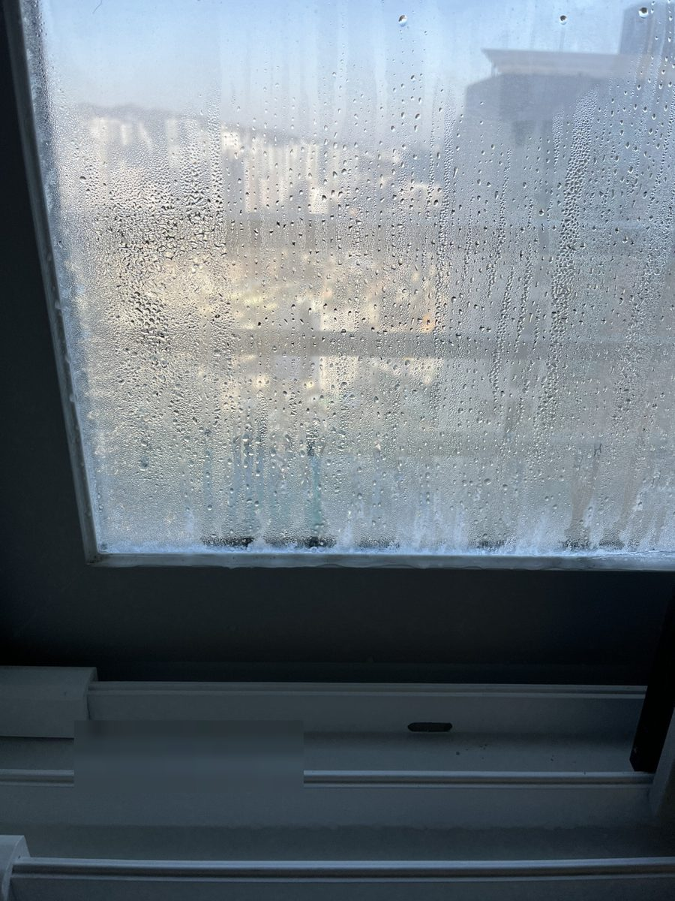
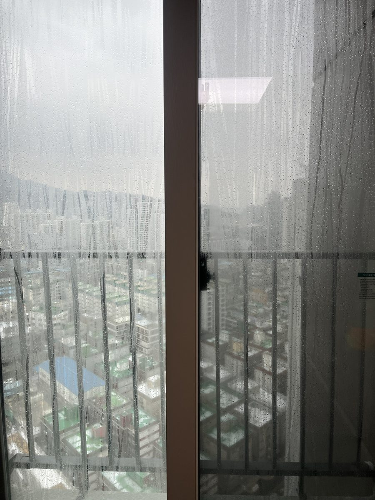
현장 조건 — 입주 1년차 신축, 27층 고층, 앞이 트여 바람을 정면으로 받음,
북동향(햇빛은 오전만), 발코니 이중창, 전용 84㎡, 전열교환기 설치
핵심 단서 — 바깥쪽 창(외창)에는 결로와 결빙이 심한데, 안쪽 창(내창)은 멀쩡합니다.
이중창은 창이 두 겹이고 그 사이에 발코니 공간이 있습니다.
내창은 따뜻한 실내(약 20°C)와 맞닿아 표면 온도가 높게 유지됩니다. 그래서 결로가 안 생깁니다.
외창은 영하의 바깥 공기와 직접 맞닿은 집 안에서 가장 차가운 면입니다.
발코니 공간의 습기가 이 면에 응결됩니다.
💡 즉 외창 결로는 이중창 구조상 상당 부분 불가피한 현상입니다
- 그리고 내창에 결로가 없다는 것은 실내측 창호의 단열·기밀에 문제가 없다는 강력한 증거입니다
이 세대 입주자분은 창호업 종사자셨고, 창틀 주위 폼충진 부실을 원인으로 보셨습니다. 충분히 그렇게 볼 수 있는 상황이었습니다. 그래서 시공 상태를 하나씩 확인했습니다.
| 확인 항목 | 결과 |
|---|---|
| 배수구홈 | 이상 없음 |
| 풍지판 | 시공되어 있음 |
| 걸림치수 · 수직수평 | 정상 |
| 초음파 음향카메라 누설 검사 | 뚜렷한 누설 지점 없음 |
시공 하자로 볼 만한 근거가 나오지 않았습니다. 원인은 다른 곳에 있었습니다.
① 신축 1년차 — 건물이 아직 마르는 중
콘크리트·미장·도배에서 나오는 수분은 입주 후 2~3년간 계속 실내로 방출됩니다. 새 아파트가 오히려 결로에 취약한 이유입니다. 집 자체가 습기 공급원입니다.
② 생활 습기가 발코니에 축적
요리·실내 빨래 건조·재실 인원에서 나온 수증기가 내창을 여닫을 때 발코니로 넘어갑니다. 발코니는 환기가 잘 안 돼 습기가 쌓이고, 가장 차가운 외창 유리에 맺힙니다.
③ 27층 고층 + 전면 개방 — 강한 풍압과 연돌효과
거실 창을 열면 바람 소리가 셀 정도로 노출된 위치였습니다. 찬 바람이 유리면을 급격히 식히면 맺힌 물이 그대로 얼어붙습니다. 결빙까지 간 이유입니다.
④ 알루미늄 간봉의 열교
복층유리 테두리의 알루미늄 간봉은 열을 잘 전달해 유리 가장자리와 하부부터 가장 차가워집니다. 사진에서 결로·결빙이 아래쪽과 모서리부터 집중되는 것이 그 증거입니다.
✅ 이 세대에 드린 권고 — 공사가 아니라 관리였습니다
- 전열교환기를 겨울에도 끄지 마십시오. 24시간 ‘약~중’ 연속 운전이 원칙입니다. 조리·샤워 직후에는 30~60분 ‘강’. 필터는 2~3개월마다 청소. 결로 세대에서 가장 효과가 큰 조치입니다
- 제습기로 실내 습도 45~50% 유지. 84㎡ 기준 1일 제습량 16~20L급 1대. 놓는 위치는 발코니가 아니라 실내입니다. 40% 아래로는 내리지 마십시오
- 실내 빨래 건조와 과도한 조리 습기 자제 (신축 2~3년 특히)
- 발코니 완충공간을 주기적으로 환기
- 커튼이 창 앞 공기 순환을 막지 않도록
- 겨울에 열화상 재검사 — 여름 방문이라 열화상을 찍지 못했습니다. 폼충진·냉교의 최종 확인은 겨울에 가능합니다
결로 문의를 받으면 이렇게 말하기 쉽습니다. “단열이 부실합니다. 공사하셔야 합니다.”
하지만 이 세대는 공사할 것이 아니었습니다. 공사했으면 돈만 쓰고 결로는 그대로였을 겁니다.
결로는 온도와 습도의 문제입니다. 어디가 차가운지, 습기가 어디서 오는지를 봐야 합니다.
그래서 저희는 측정하고, 조건을 따져보고, 필요 없으면 필요 없다고 말씀드립니다.
📜 특허출원 현황
| 발명의 명칭 | 모헤어를 갖는 미닫이 창호용 방풍캡 |
|---|---|
| 출원번호 | 특허출원 제10-2026-0149584호 |
| 출원일 | 2026년 8월 11일 |
| 출원인 | 전영웅 |
| 진행 상태 | 심사 진행 중 (등록 전) |
외풍 수리를 하다 보면 늘 같은 벽에 부딪혔습니다. 바람이 들어오는 가장 큰 통로가 여밈대 중공부인데, 이걸 막을 마땅한 부품이 없었습니다.
⚠ 기존 제품들의 한계
- 판 형태라 레일에 제대로 밀착이 안 됩니다
- 브러시가 얹혀 있는 구조라 시간이 지나면 변형됩니다
- 브러시 길이가 짧아 일부 구간만 막힙니다
특히 마지막이 컸습니다. 짧은 브러시를 여기저기 붙이면 그 사이사이가 그대로 뚫려 있습니다. 공기는 남아 있는 가장 큰 틈으로 다 들어옵니다. 부분만 막는 것은 의미가 없다는 것이 현장에서 얻은 결론이었습니다.
창짝 끝면(마구리판)에 붙는 전면판이 있고, 거기에 모헤어를 끼워 넣는 삽입레일이 하나로 붙어 있습니다. 모헤어를 레일에 밀어 넣으면 빠지지 않게 물립니다.
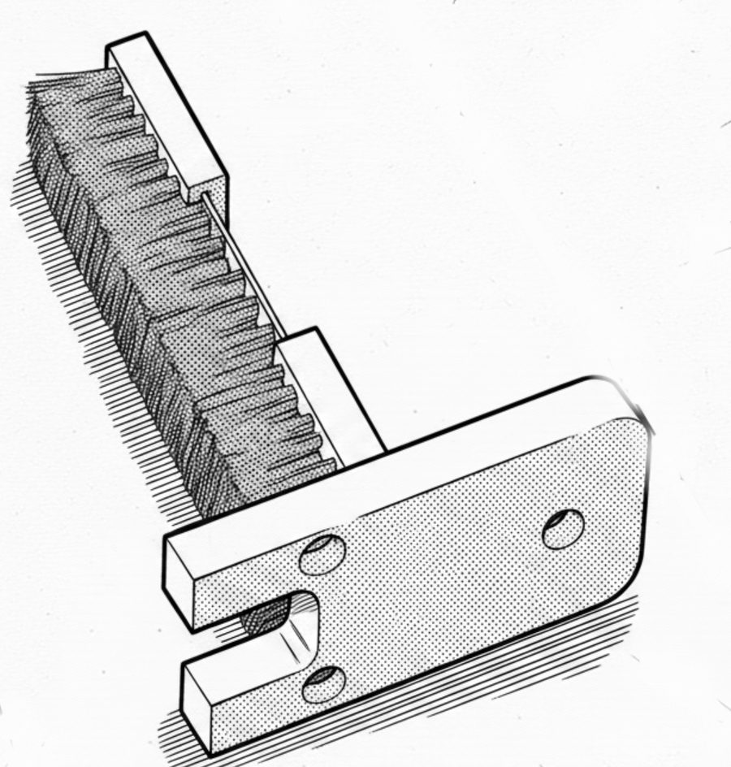
✅ 기존 방식과의 차이
- 기존은 브러시를 캡에 얹는 구조 → 저희는 캡 자체에 레일을 만들어 끼우는 구조
- 모헤어가 흔들리거나 빠지지 않습니다
- 시간이 지나도 위치가 유지됩니다
- 나중에 모헤어만 빼서 교체할 수 있습니다
짧은 브러시를 여러 개 붙이는 대신,
긴 모헤어 하나를 방풍캡과 가로발이 여러 지점에서 함께 지지합니다.
이렇게 하면 창짝의 일정 길이를 끊김 없이 연속으로 막을 수 있습니다.
짧은 조각을 이어 붙이면 이음매가 생기고, 그 이음매가 그대로 바람 길이 됩니다.
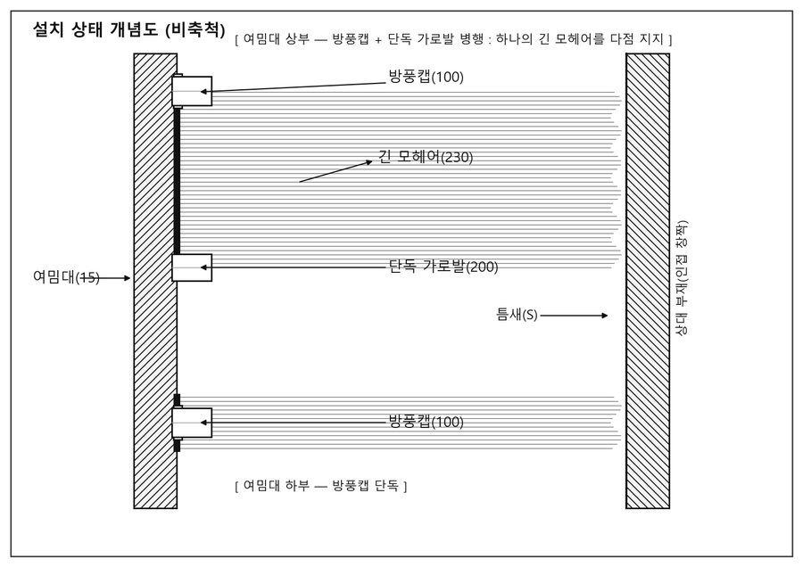
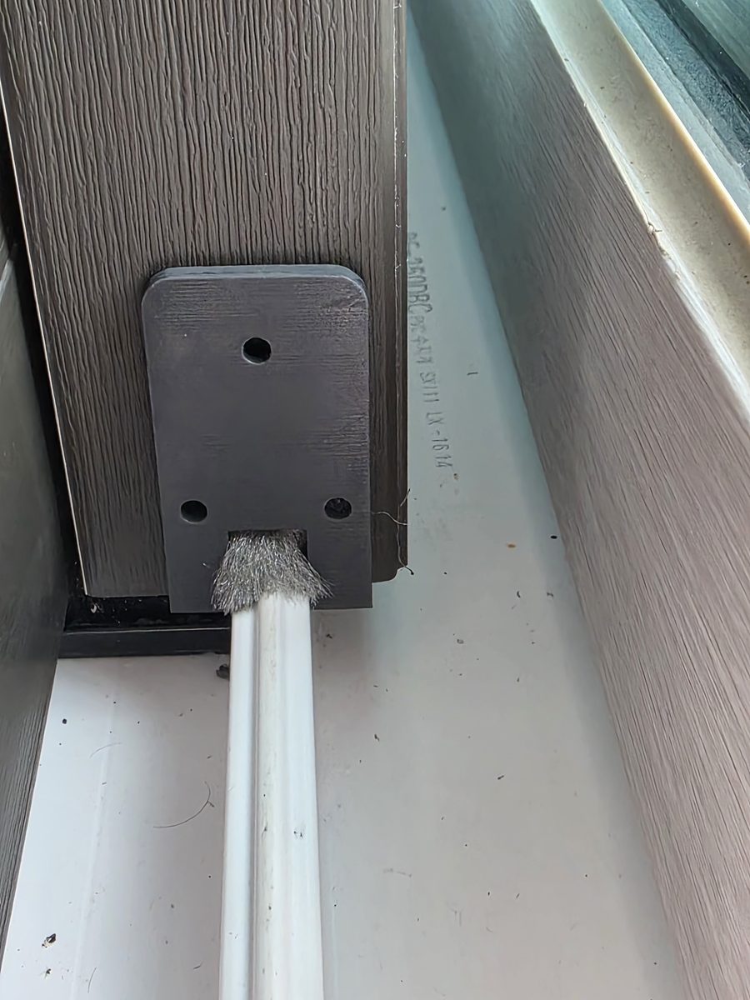
🔧 설치가 쉬워야 의미가 있습니다
- 이미 설치된 창호에 나중에 부착할 수 있도록 만들었습니다
- 나사 · 접착층 · 벨크로 중 현장 여건에 맞게 선택
- 창짝을 분해하지 않고 시공합니다
외풍을 막겠다고 틈을 무리하게 조이면 창문이 뻑뻑해집니다.
그러면 고객은 결국 다시 헐겁게 해달라고 하시고, 외풍은 원상복구됩니다.
그래서 처음부터 조건을 이렇게 잡았습니다.
창짝이 부드럽게 열리고 닫히는 상태를 유지하면서 틈을 줄일 것.
미닫이 창호는 완전 밀폐가 불가능한 구조입니다. 그건 인정하고 시작해야 합니다.
할 수 있는 것은 개폐를 유지한 채 최대한 줄이는 것입니다.
이사할 때 가장 많이 생기는 사고입니다. 큰 가구를 옮기다 창틀 모서리를 찍습니다.
표면이 찢기고, 무늬가 벗겨지고, 속이 드러납니다.
이때 보통 이런 답을 듣습니다. “창틀은 부분 수리가 안 됩니다. 통째로 교체하셔야 합니다.”
창틀 한쪽 모서리 때문에 창 전체를 바꾸라는 이야기입니다. 비용도 크고 철거와 재시공까지 따라옵니다.
부분 복원이 됩니다.
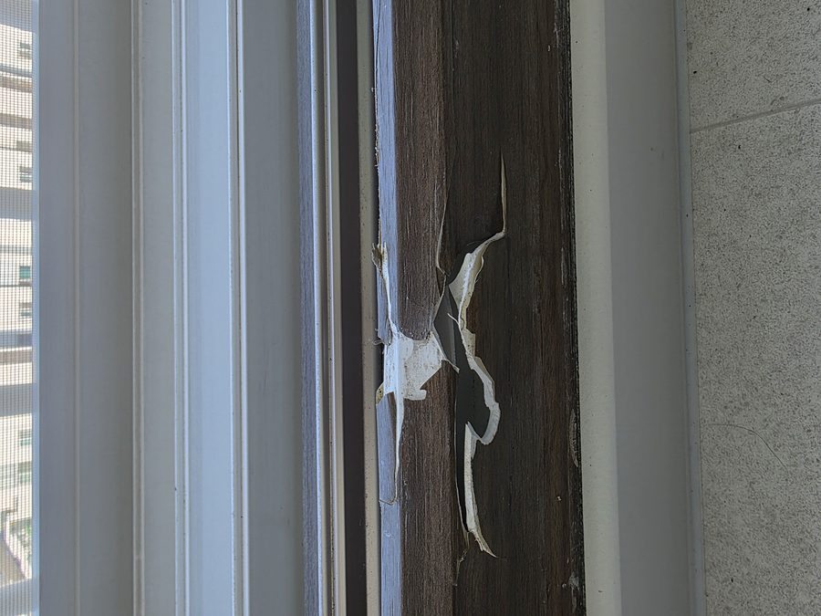
여기서 많이 오해하십니다. 나무 무늬가 나는 창틀은 나무가 아닙니다.
PVC 프레임 위에 무늬가 인쇄된 필름을 입힌 것이고, 이것을 랩핑이라고 합니다.
이게 왜 중요하냐면, 복원 방법이 완전히 달라지기 때문입니다.
| 창틀 종류 | 복원 마감 | 이유 |
|---|---|---|
| 단색 창틀 | 도장으로 가능 | 색만 맞추면 됨 |
| 우드 무늬 창틀 | 재랩핑 (도장 ❌) | 나뭇결을 붓으로 그릴 수 없음 |
⚠ 우드 무늬 창틀에 도장을 하면
- 색만 비슷하게 칠해도 그 부분만 확연히 달라 보입니다
- 나뭇결이 끊겨서 오히려 더 눈에 띕니다
- 우드 무늬 창틀의 마지막 공정은 도장이 아니라 재랩핑입니다
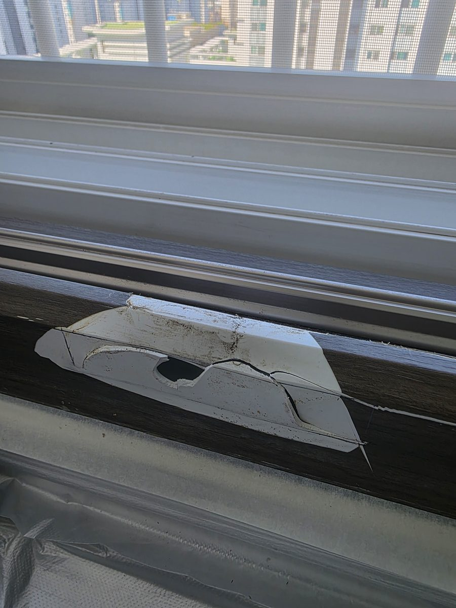
들뜬 필름을 남겨두면 그 위에 무엇을 해도 다시 들뜹니다. 먼저 완전히 정리합니다. 이 현장은 필름을 벗기고 나서야 프레임 자체가 깨진 것이 드러났습니다.
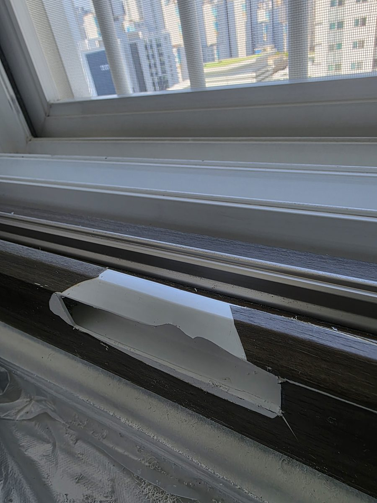
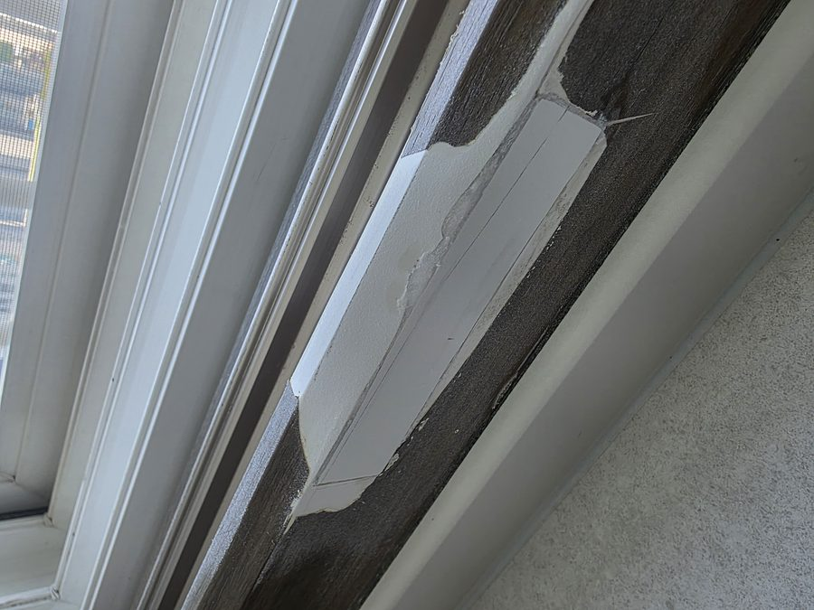
💡 이 단계가 결과를 좌우합니다
- 창틀은 평면이 아닙니다. 모서리에 각이 있고 면마다 미세한 곡률이 있습니다
- 여기서 면이 안 맞으면 필름을 붙였을 때 그 굴곡이 그대로 비칩니다
- 퍼티를 채우는 것보다 원래 형태로 깎아내는 것이 어렵습니다
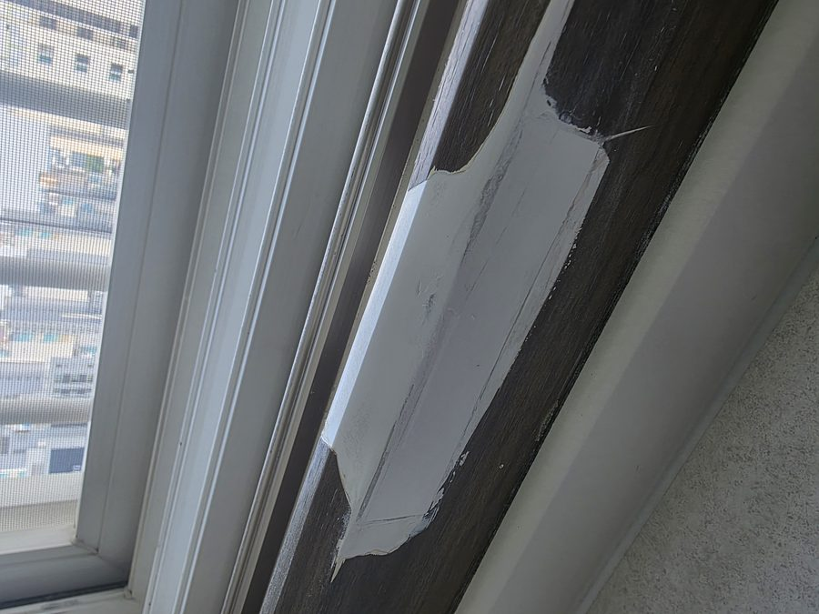
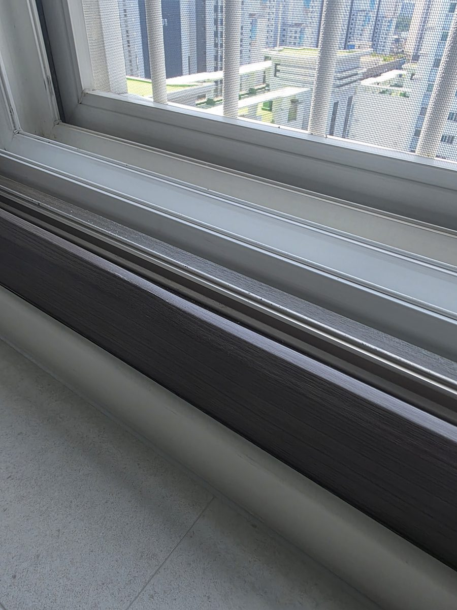
기존 창틀과 같은 무늬의 필름을 붙입니다. 무늬 방향을 맞추는 것이 중요합니다.
나뭇결이 반대로 가면 그 부분만 눈에 띕니다.
창짝, 유리, 창틀 본체는 모두 그대로입니다. 파손된 표면만 복원했습니다.
✅ 이런 경우에도 복원됩니다
- 이삿짐 · 가구 이동 중 찍힘
- 공사 중 그라인더 · 연장에 긁힘
- 반려동물 스크래치
- 실리콘 제거하다 생긴 표면 손상
- 인테리어 시공 중 오염 · 손상
⚠ 다만 이런 경우는 어렵습니다
- 프레임 자체가 구조적으로 갈라진 경우
- 파손 범위가 창틀 전체에 걸친 경우
- 단종된 특수 무늬라 같은 필름을 구할 수 없는 경우
정직하게 말씀드리면 항상 부분 복원이 답은 아닙니다. 복원해도 티가 날 상황이면 그렇다고 말씀드립니다. 사진을 먼저 보내주시면 가능 여부를 판단해 드립니다.
📱 문의 전에 이것만
- 파손부 근접 사진
- 창틀 전체가 나오는 사진
- 파손 길이 — 줄자를 대고 찍어주시면 정확합니다
- 창틀 색상과 무늬가 잘 보이는 컷 (같은 필름을 찾아야 합니다)
창틀 표면이 파손된 게 아니라 공사 중 튄 이물질이 굳어 붙은 경우도 많습니다.
이건 닦아내는 것으로 끝나지 않습니다. 전용 용제로 이물질을 제거한 뒤
손상된 표면을 도장으로 마감해야 원래 상태로 돌아옵니다.
오염 제거는 도장, 파손 복원은 재랩핑 — 서로 다른 작업입니다.
터닝도어 · 잠금 불량
손잡이는 돌아가는데 문이 안 열리거나, 잠금이 걸리지 않는 경우. 하드웨어 연동부와 스트라이커 위치를 맞춰 조정합니다.
단종 부품 대체 수리
“부품이 단종돼서 창호를 통째로 바꿔야 한다”는 말을 들으셨다면. 규격이 맞는 현행 부품으로 맞춰 넣으면 창짝·유리·창틀을 그대로 두고 복구됩니다.
창틀 물고임 · 누수
비 온 뒤 창틀에 물이 고이고 마루가 변색된다면. 배수구가 아니라 부재 접합부 실링이 원인인 경우가 많습니다. 물이 나오는 곳이 아니라 들어오는 곳을 찾습니다.
개폐 불량 · 잠금 불량
수직·수평 불량, 롤러·하드웨어 문제, 걸림 치수 부족. 재현되는 상태를 확인하고 원인에 맞춰 조정합니다.
⚖ 공정별 하자담보책임기간
| 기간 | 해당 공사 | 대표 하자 |
|---|---|---|
| 2년 | 마감공사 (도배·도장·타일·미장) | 도배 들뜸, 타일 파손 |
| 3년 | 창호공사, 단열, 목공사, 설비 | 창틀 틈새·외풍, 결로, 개폐 불량 |
| 5년 | 방수, 지붕, 철근콘크리트, 조적 | 창틀 주위 누수, 균열 |
| 10년 | 내력구조부, 지반 | 구조 균열·침하 |
💡 자주 듣는 말과 사실
- “담보기간 지났습니다” → 담보책임기간은 하자가 ‘발생’해야 하는 기간입니다. 기간 내 발생을 입증하면 이후 청구도 가능합니다 (대법원 2023다298892)
- “입주 전에 신청 안 하셨잖아요” → 사전점검 미지적은 청구 배제 사유가 아닙니다
- “쓰다가 생긴 겁니다” → 언제 생겼는지의 입증 문제입니다
- 구두 거절은 공식 결정이 아닙니다. 서면으로 청구하고 서면 회신을 요구하십시오 (사업주체는 청구받은 날부터 15일 이내 서면 통보 의무)
- 불응하면 국토교통부 하자심사·분쟁조정위원회에 신청할 수 있습니다 (비용 없음)
📈 여기서 저희 역할
- 법률 상담은 저희 영역이 아닙니다. 하심위나 변호사께 문의하셔야 합니다
- 저희가 하는 것은 측정과 기록입니다
- “추워요”를 “이 지점의 표면온도가 몇 도이고 노점이 몇 도라 결로 조건입니다”로 바꿔드립니다
- 외풍·결로는 실측 자료가 강력한 증거가 됩니다. 특히 표면온도 < 노점온도를 보여주는 열화상 한 장이 승부처입니다
원인을 모르고 손대면
돈만 나갑니다
저희는 눈으로 보지 않고 측정합니다.
조건이 안 맞으면 안 맞는다고 말씀드리고,
고칠 것이 없으면 없다고 말씀드립니다.
대표번호 1599-7380
frogsash.co.kr
- 창문이 안 닫히거나 창짝이 빠집니다
- 롤러를 갈았는데 얼마 못 가 다시 그렇습니다
- 새 아파트인데 창가가 유독 춥습니다
- 외풍 시공을 받았는데 별 차이가 없습니다
- 창에 물이 맺히고 얼음이 업니다
- 하자 신청을 했는데 “이상 없음”으로 나왔습니다
- 하자 청구에 쓸 근거 자료가 필요합니다
📱 문의 전에 이것만 보내주시면 빠릅니다
- 증상 부위 근접 사진과 창 전체가 나오는 사진
- 증상이 나타나는 영상 10초 (개폐 불량·누수는 특히)
- 언제부터 그런지, 어떤 조건에서 나타나는지 (비 올 때만, 겨울에만 등)
- 사진을 보내주시면 1차 소견을 먼저 드립니다